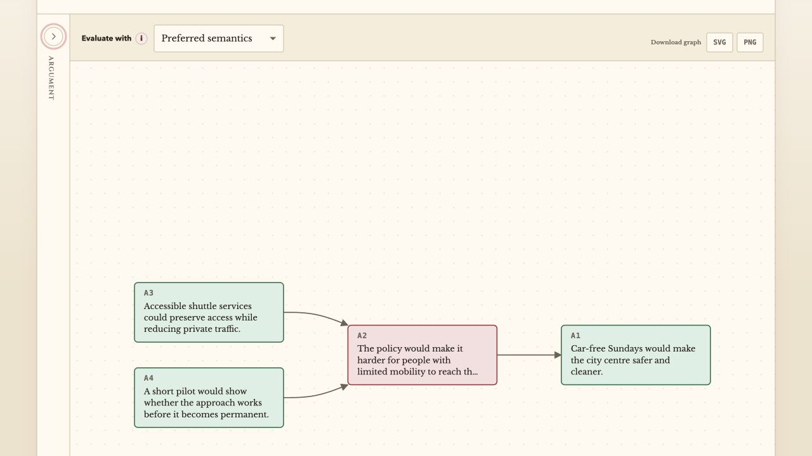

Argupedia

Argupedia was my 2021 final project for the MSc Advanced Computing at King's College London, supervised by Dr Sanjay Modgil. It explored a constructive alternative to chronological debate threads: people build structured arguments, direct counterarguments at specific claims and inspect the resulting debate as a graph.
Structuring debate
Argupedia guides each contribution through one of eight argumentation schemes. The selected scheme determines the supporting fields and the critical questions available to challenge its assumptions. Claims become nodes; attacks become directed arrows.

Building and restoring the system
The original prototype used JavaScript, D3.js, Dagre and Firebase Cloud Firestore to store arguments and attack relationships, render interactive graphs and apply labelling inspired by Dung's abstract argumentation framework. The current open-source edition replaces the retired backend with private browser storage, adds versioned JSON import and export, and supports grounded, complete and preferred semantics alongside SVG and PNG graph exports.
Pilot evaluation
Four participants remotely compared Argupedia with Debate.org using AttrakDiff questionnaires and qualitative feedback. All four reported learning more about argumentation, logic and debate with Argupedia; it also scored higher for stimulation and engagement, but lower for pragmatic usability. As a small, non-random pilot conducted during the pandemic, the study identified promising directions rather than generalisable findings.